uadmin.ABTest¶
Back to A/B Test Functions Page
ABTest is a model that stores an A/B test.
Structure:
type ABTest struct {
Model
Name string `uadmin:"required"`
Type ABTestType `uadmin:"required"`
StaticPath string
ModelName ModelList
Field FieldList
PrimaryKey int
Active bool
Group string
}
Here are the following fields and their definitions:
Name - The name of the A/B Test
Type - A list of test types from a dropdown menu
StaticPath - The path assigned in the static
ModelName - A list of registered models
Field - A list of fields from schema for a registered model
PrimaryKey - Used to uniquely identify each row in the table
Active - Checks whether the A/B Test is Active
Group - The name of the group
There are 2 ways you can do for initialization process using this function: one-by-one and by group.
One-by-one initialization:
func main(){
// Some codes
abtest := uadmin.ABTest{}
abtest.Name = "Name"
abtest.Type = uadmin.ABTestType(0).Static()
abtest.StaticPath = "Static Path"
}
By group initialization:
func main(){
// Some codes
abtest := uadmin.ABTest{
Name: "Name",
Type: uadmin.ABTestType(0).Static(),
StaticPath: "Static Path",
}
}
In the following examples, we will use “by group” initialization process.
uadmin.ABTest Examples¶
Example #1: Static¶
Part 1: HTML Template¶
Before you proceed, make sure you have at least the basic knowledge of HTML. If you are not familiar with HTML, we advise you to go over W3Schools.
In this tutorial, we will use Bootstrap 4. For the tutorials, click here.
First of all, go to your project folder and select templates.

Inside the templates folder, create a new file named index.html.
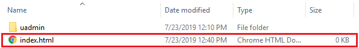Inside the index.html, create an HTML5 structure following the codes below and change the title from Document to Campaign.
<!DOCTYPE html>
<html lang="en">
<head>
<meta charset="UTF-8">
<meta name="viewport" content="width=device-width, initial-scale=1.0">
<meta http-equiv="X-UA-Compatible" content="ie=edge">
<!-- Latest compiled and minified CSS -->
<link rel="stylesheet" href="https://maxcdn.bootstrapcdn.com/bootstrap/4.3.1/css/bootstrap.min.css">
<title>Campaign</title>
</head>
<body>
<div class="container-fluid">
<h1>Campaign</h1>
</div>
<!-- jQuery library -->
<script src="https://ajax.googleapis.com/ajax/libs/jquery/3.4.1/jquery.min.js"></script>
<!-- Popper JS -->
<script src="https://cdnjs.cloudflare.com/ajax/libs/popper.js/1.14.7/umd/popper.min.js"></script>
<!-- Latest compiled JavaScript -->
<script src="https://maxcdn.bootstrapcdn.com/bootstrap/4.3.1/js/bootstrap.min.js"></script>
</body>
</html>
Save the file. Afterwards, go back to your project folder then select views.
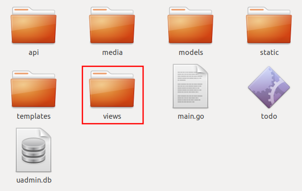Inside the views folder, create a new file named campaign.go.

Inside the campaign.go, apply the following codes below to access the HTML file in the server.
package views
import (
"net/http"
"github.com/uadmin/uadmin"
)
// CampaignHandler !
func CampaignHandler(w http.ResponseWriter, r *http.Request) {
// Access HTML file
uadmin.RenderHTML(w, r, "templates/index.html", nil)
}
Establish a connection in the main.go to the views by using http.HandleFunc. It should be placed after the uadmin.Register and before the StartServer.
package main
import (
"net/http"
// Specify the username that you used inside github.com folder
"github.com/username/campaign/views"
"github.com/uadmin/uadmin"
)
func main() {
// Campaign Handler
http.HandleFunc("/campaign/", uadmin.Handler(views.CampaignHandler))
uadmin.StartServer()
}
Now run your application and go to /campaign/ path in the address bar (e.g. http://0.0.0.0:8080/campaign/). You should see this result.

Part 2: Static Handler¶
Create a new folder named “campaign-ui” in the project directory.
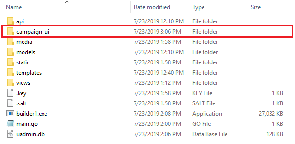Search for any images on the Internet. In this example, we will use Donate and Contribute images.
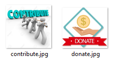Establish a StaticHandler connection in the main.go by using http.HandleFunc. It should be placed after the uadmin.Register and before the StartServer.
package main
import (
"net/http"
// Specify the username that you used inside github.com folder
"github.com/username/campaign/views"
"github.com/uadmin/uadmin"
)
func main() {
// StaticHandler is a function that serves static files.
http.HandleFunc("/campaign-ui/", uadmin.Handler(uadmin.StaticHandler))
uadmin.StartServer()
}
Part 3: A/B Test Function for Static¶
Let’s create an A/B test for images in main.go.
package main
import (
"net/http"
// Specify the username that you used inside github.com folder
"github.com/username/campaign/views"
"github.com/uadmin/uadmin"
)
func main() {
uadmin.Register()
abtest := uadmin.ABTest{
Name: "Photo Test",
Type: uadmin.ABTestType(0).Static(),
StaticPath: "/campaign-ui/donate.jpg",
ModelName: uadmin.ModelList(0),
Field: uadmin.FieldList(0),
PrimaryKey: 0,
Active: true,
Group: "campaign",
}
uadmin.Save(&abtest)
// Some codes
}
Run your application. From uAdmin dashboard, click “AB Tests”.

As expected, Photo Test record has been created.
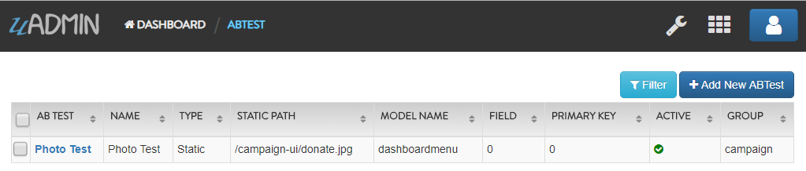Part 4: A/B Test Value Function for Static¶
First of all, delete/comment out the AB Test code that you have created.
// abtest := uadmin.ABTest{
// Name: "Photo Test",
// Type: uadmin.ABTestType(0).Static(),
// StaticPath: "/campaign-ui/donate.jpg",
// ModelName: uadmin.ModelList(0),
// Field: uadmin.FieldList(0),
// PrimaryKey: 0,
// Active: true,
// Group: "campaign",
// }
// uadmin.Save(&abtest)
Let’s create two A/B test values in main.go. One is for Donate and the other one is for Contribute.
func main(){
// Some codes
donate := uadmin.ABTestValue{
ABTestID: 1,
Value: "/campaign-ui/donate.jpg",
Active: true,
}
contribute := uadmin.ABTestValue{
ABTestID: 1,
Value: "/campaign-ui/contribute.jpg",
Active: true,
}
uadmin.Save(&donate)
uadmin.Save(&contribute)
}
Run your application, go to AB Tests from uAdmin dashboard, and click the Photo Test record. From here, click “ABTEST VALUE” inline.

As expected, donate and contribute values were created to Photo Test record.

Part 5: Image Testing¶
Go to index.html in templates folder. Inside the container-fluid class, add an image that referenced to the A/B Test Static Path.
<div class="container-fluid">
<h1>Campaign</h1>
<!-- ADD THIS PIECE OF CODE HERE -->
<img src="/campaign-ui/donate.jpg" />
</div>
Now go to /campaign/ path in the address bar (e.g. http://0.0.0.0:8080/campaign/). You should see this result.

Right click your mouse then select Inspect or just press Ctrl + Shift + I on your keyboard to open the inspect element tab.

From here, click Application tab.

In Storage, click on Cookies on the left side then select http://localhost:8080. You will see that there is an abt cookie in the table list. In A/B test, we will focus on the value. It is randomly generated. If the value is an even number, we are getting the original image that is the path of the A/B test value is equal to the A/B test static path. Otherwise, we are getting the different image. In addition to this, abt cookie will expire every midnight.

Now let’s delete the abt cookie.

Refresh the webpage and see what happens.
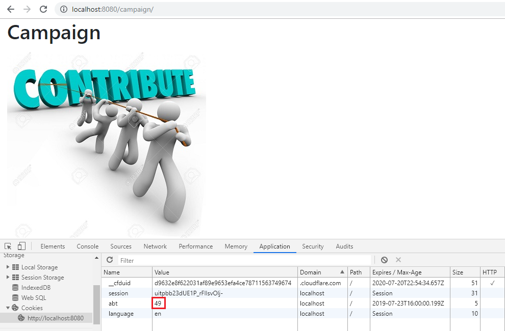The image displays differently because the abt cookie value is an odd number. Repeat the same process until you get an even number.

It displays an original image once again because the abt cookie value is an even number.
Now go back to A/B Test Value in the Photo Test record. You will see the impression count in each record. This is the number of your visits.
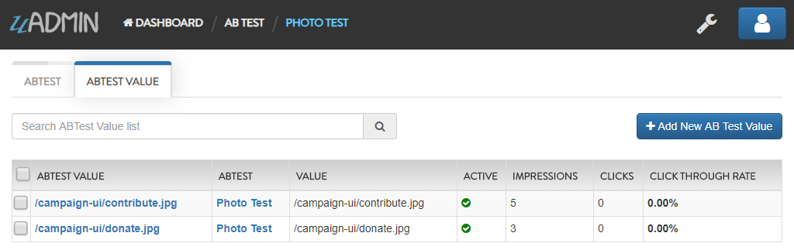Based on the result, the contribute image has higher impressions than donate ones.
Example #2: Model¶
Part 1: Campaign Info Model¶
Create a file named campaign_info.go inside the models folder with the following codes below:
package models
import (
"github.com/uadmin/uadmin"
)
// CampaignInfo model ...
type CampaignInfo struct {
uadmin.Model
Name string
Button string
}
Register the Campaign Info Model in the main.go.
package main
import (
"net/http"
// Specify the username that you used inside github.com folder
"github.com/username/campaign/models"
"github.com/username/campaign/views"
"github.com/uadmin/uadmin"
)
func main() {
uadmin.Register(
models.CampaignInfo{},
)
// Some codes
}
Run your application. From uAdmin dashboard, click on “CAMPAIGN INFOS”.

Click “Add New Campaign Info”.
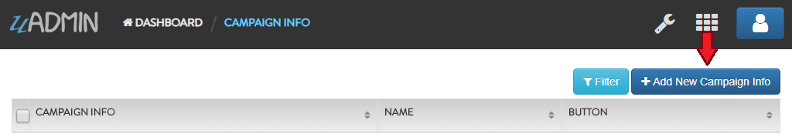Create a Donate record for Name and Button.

Result
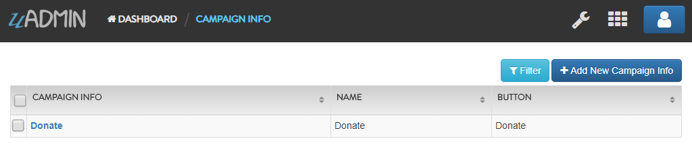Part 2: A/B Test Function for Model¶
Let’s create an A/B test for name and button in main.go.
package main
import (
"net/http"
// Specify the username that you used inside github.com folder
"github.com/username/campaign/models"
"github.com/username/campaign/views"
"github.com/uadmin/uadmin"
)
func main() {
// Some codes
button := uadmin.ABTest{
Name: "Button Test",
Type: uadmin.ABTestType(0).Model(),
PrimaryKey: 1,
Active: true,
Group: "campaign",
}
uadmin.Save(&button)
name := uadmin.ABTest{
Name: "Name Test",
Type: uadmin.ABTestType(0).Model(),
PrimaryKey: 1,
Active: true,
Group: "campaign",
}
uadmin.Save(&name)
// Some codes
}
Run your application. From uAdmin dashboard, click “AB Tests”.
As expected, Name and Button Test records were created. In this scenario, we need to assign the model name and field.

First, click on “Name Test”.
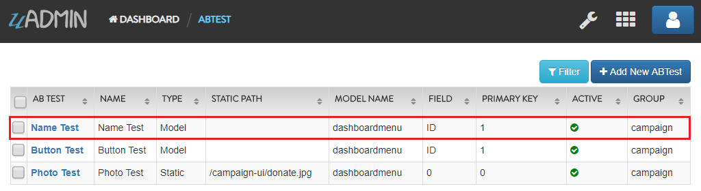Assign the model name to “campaigninfo” and field to “Name”.
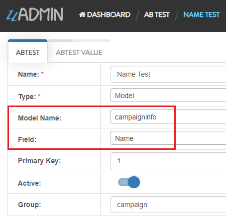Lastly, click on “Button Test”.

Assign the model name to “campaigninfo” and field to “Button”.

Result
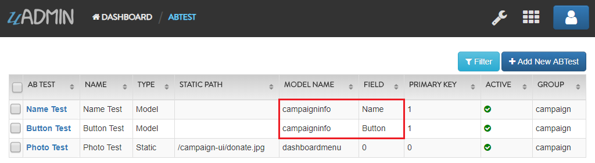Part 3: A/B Test Value Function for Model¶
First of all, delete/comment out the AB Test code that you have created.
// button := uadmin.ABTest{
// Name: "Button Test",
// Type: uadmin.ABTestType(0).Model(),
// PrimaryKey: 1,
// Active: true,
// Group: "campaign",
// }
// uadmin.Save(&button)
// name := uadmin.ABTest{
// Name: "Name Test",
// Type: uadmin.ABTestType(0).Model(),
// PrimaryKey: 1,
// Active: true,
// Group: "campaign",
// }
// uadmin.Save(&name)
Let’s create four A/B test values in main.go. Two values are for Name and the other two are for Button.
func main(){
// Some codes
donatebutton := uadmin.ABTestValue{
ABTestID: 2, // ID of Button Test
Value: "Donate",
Active: true,
}
contributebutton := uadmin.ABTestValue{
ABTestID: 2, // ID of Button Test
Value: "Contribute",
Active: true,
}
uadmin.Save(&donatebutton)
uadmin.Save(&contributebutton)
donatename := uadmin.ABTestValue{
ABTestID: 3, // ID of Name Test
Value: "Donate",
Active: true,
}
contributename := uadmin.ABTestValue{
ABTestID: 3, // ID of Name Test
Value: "Contribute",
Active: true,
}
uadmin.Save(&donatename)
uadmin.Save(&contributename)
}
Run your application, go to AB Tests from uAdmin dashboard, and click the Name Test record. From here, click “ABTEST VALUE” inline.

As expected, Donate and Contribute values were created to Name Test record.
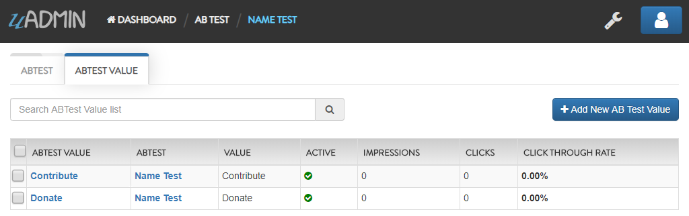Similarly, they also go with the Button Test record.

Part 4: API Click Handler¶
Create a file named ab_test_click.go inside the api folder with the following codes below:
package api
import (
"net/http"
"strings"
"github.com/uadmin/uadmin"
)
// ABTestClickHandler !
func ABTestClickHandler(w http.ResponseWriter, r *http.Request) {
// r.URL.Path creates a new path called "/ab_test_click/"
r.URL.Path = strings.TrimPrefix(r.URL.Path, "/ab_test_click")
r.URL.Path = strings.TrimSuffix(r.URL.Path, "/")
// Register a click for a campaign group
uadmin.ABTestClick(r, "campaign")
}
Establish a connection in the main.go to the API by using http.HandleFunc. It should be placed after the uadmin.Register and before the StartServer.
import (
"net/http"
// Specify the username that you used inside github.com folder
"github.com/username/campaign/models"
"github.com/username/campaign/views"
// Import this library
"github.com/username/campaign/api"
"github.com/uadmin/uadmin"
)
func main() {
// Some codes
// AB Test Click Handler
http.HandleFunc("/ab_test_click/", uadmin.Handler(api.ABTestClickHandler))
}
api is the folder name while ABTestClickHandler is the name of the function inside ab_test_click.go.
Part 5: Get A/B Test¶
Go to campaign.go in the views folder and apply the following codes below:
package views
import (
"net/http"
// Specify the username that you used inside github.com folder
"github.com/username/campaign/models"
"github.com/uadmin/uadmin"
)
// CampaignHandler !
func CampaignHandler(w http.ResponseWriter, r *http.Request) {
// Initialize the Campaign Info model
campaigninfo := models.CampaignInfo{}
// Fetch the first active AB Test record in the Campaign Info
// model
uadmin.GetABTest(r, &campaigninfo, "id = ?", 1)
// Pass campaigninfo data object to the specified HTML path
uadmin.RenderHTML(w, r, "templates/index.html", campaigninfo)
}
Part 6: Button Testing¶
Go to index.html in templates folder. Inside the container-fluid class, make the header name dynamic by applying Go Template. Create a button below the image and make the button name dynamic as well. Below the Latest compiled JavaScript library, initialize an internal script. Inside it, call an AJAX that sends user click response to API. This will increment a user click count in the A/B Test value which will be discussed later.
<!DOCTYPE html>
<html lang="en">
<head>
<meta charset="UTF-8">
<meta name="viewport" content="width=device-width, initial-scale=1.0">
<meta http-equiv="X-UA-Compatible" content="ie=edge">
<!-- Latest compiled and minified CSS -->
<link rel="stylesheet" href="https://maxcdn.bootstrapcdn.com/bootstrap/4.3.1/css/bootstrap.min.css">
<title>Campaign</title>
</head>
<body>
<!-- Make the header name and created button values dynamic -->
<div class="container-fluid">
<h1>{{.Name}}</h1>
<img src="/campaign-ui/donate.jpg" />
<button class="click-button">{{.Button}}</button>
</div>
<!-- jQuery library -->
<script src="https://ajax.googleapis.com/ajax/libs/jquery/3.4.1/jquery.min.js"></script>
<!-- Popper JS -->
<script src="https://cdnjs.cloudflare.com/ajax/libs/popper.js/1.14.7/umd/popper.min.js"></script>
<!-- Latest compiled JavaScript -->
<script src="https://maxcdn.bootstrapcdn.com/bootstrap/4.3.1/js/bootstrap.min.js"></script>
<!-- Send user click response to API -->
<script>
$('.click-button').on("click", function(e){
e.preventDefault();
e.stopPropagation();
$.ajax({
url: "http://localhost:8080/ab_test_click/",
method: "POST",
crossDomain: true,
cache: false,
success: function (data) {
alert("You clicked the button.");
},
"error": function(x,y,z){
// TODO: handle ERROR
console.log(x);
console.log(y);
console.log(z);
}
});
});
</script>
</body>
</html>
Before you run your application, make sure that your A/B Test value codes were deleted/commented out in main.go.
// donatebutton := uadmin.ABTestValue{
// ABTestID: 4, // ID of Button Test
// Value: "Donate",
// Active: true,
// }
// contributebutton := uadmin.ABTestValue{
// ABTestID: 4, // ID of Button Test
// Value: "Donate",
// Active: true,
// }
// uadmin.Save(&donatebutton)
// uadmin.Save(&contributebutton)
// donatename := uadmin.ABTestValue{
// ABTestID: 5, // ID of Name Test
// Value: "Donate",
// Active: true,
// }
// contributename := uadmin.ABTestValue{
// ABTestID: 5, // ID of Name Test
// Value: "Donate",
// Active: true,
// }
// uadmin.Save(&donatename)
// uadmin.Save(&contributename)
Now run your application and go to /campaign/ path in the address bar (e.g. http://0.0.0.0:8080/campaign/). You should see this result.
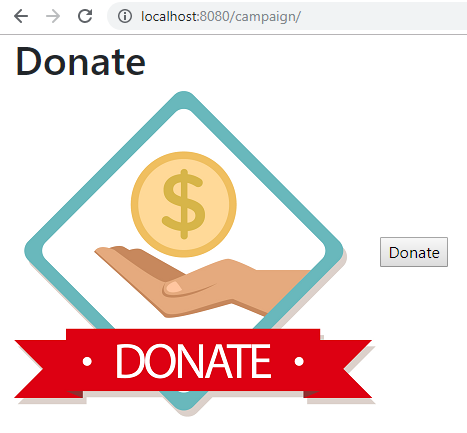Let’s click the Donate button and see what happens.

The alert box message appears on your screen. If you go to A/B Test Value inline in the Button Test record, you will see that the number of clicks in Donate record is 1 and the Click Through Rate is 100% because the number of impressions and clicks are equal.

Right click your mouse then select Inspect or just press Ctrl + Shift + I on your keyboard to open the inspect element tab.
From here, click Application tab.

In Storage, click on Cookies on the left side then select http://localhost:8080. You will see that there is an abt cookie in the table list. In A/B test, we will focus on the value. It is randomly generated. If the value is an even number, we are getting the original value from Campaign Info model in the Name and Button. Otherwise, we are getting the different results. In addition to this, abt cookie will expire every midnight.
Now let’s delete the abt cookie.
Refresh the webpage and see what happens.
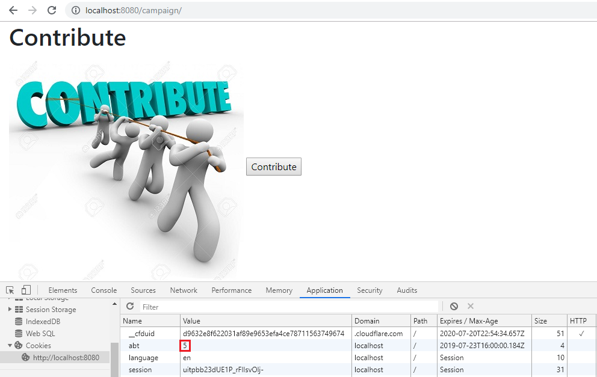We get a different result because the abt cookie value is an odd number. Repeat the same process until you get an even number.
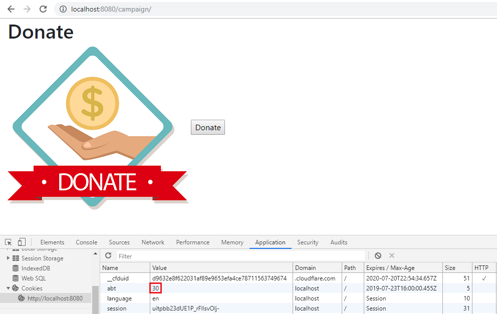They display original values once again because the abt cookie value is an even number.
Now go back to A/B Test Value in the Name and Button Test records. You will see the impression count, click count, and Click Through Rate in each record.
Name Test Result

Button Test Result

Based on the results, the contribute record has higher impressions than donate ones while the donate ones has higher clicks and click through rate than contribute ones for both Name Test and Button Test records.